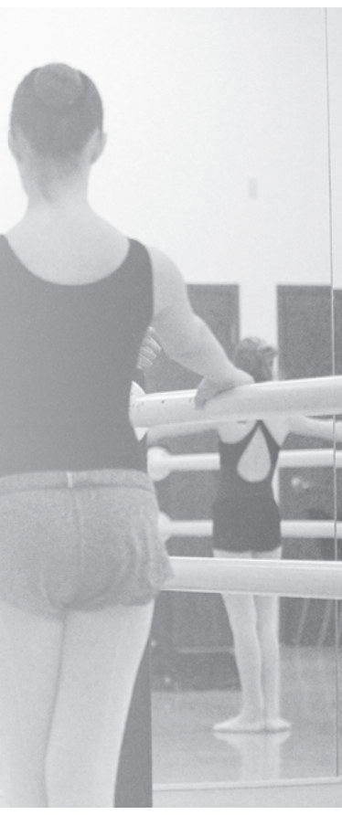
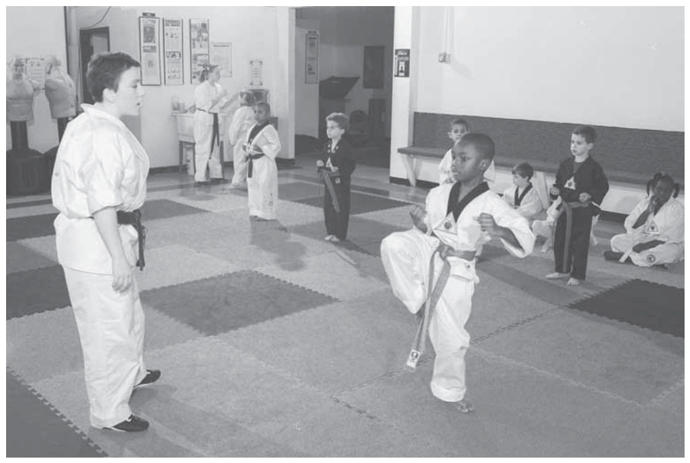
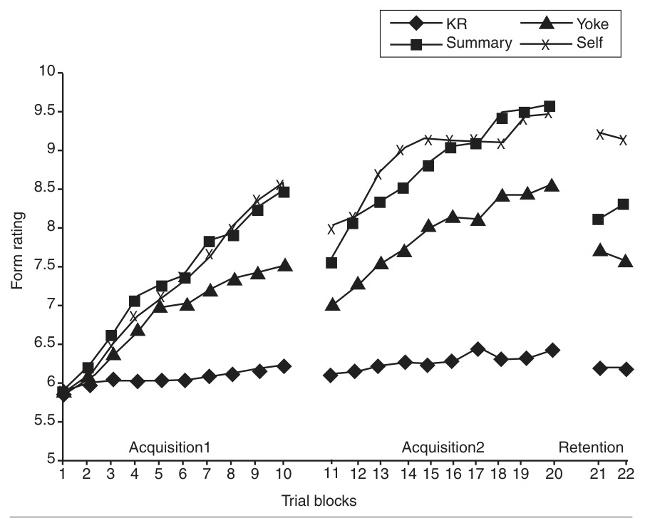

Chương 9 — Học qua quan sát như tìm kiếm có định hướng
NỘI DUNG CHƯƠNG
Tìm kiếm có định hướng và học qua quan sát
Học qua quan sát trong các bối cảnh xã hội
Quan điểm nhận thức thị giác về học qua quan sát
Nhận thức chuyển động sinh học Ảnh hưởng của thông tin chuyển động tương đối lên động lực học nội tại Bằng chứng thần kinh học: Tại sao việc xem là chưa đủ Ảnh hưởng của việc xem một mẫu hình thành thạo Thời điểm trình diễn mẫu Đặc điểm của người làm mẫu
Phản hồi video do người học điều chỉnh
Tóm tắt
CHƯƠNG 9 CHƯƠNG 9


Trong chương 8, chúng tôi đã gợi ý rằng các lý thuyết truyền thống về học vận động và các thực hành giảng dạy có xu hướng nhấn mạnh quá mức thông tin bằng lời nói như hướng dẫn và phản hồi quy định. Xuyên suốt cuốn sách này, chúng tôi đã thừa nhận rằng tìm kiếm và khám phá là những quá trình học quan trọng. Tuy nhiên, trên thực tế, theo đuổi một cách tiếp cận sư phạm hoàn toàn dựa trên khám phá thường là không khôn ngoan. Đây là một lý do khiến chúng tôi đề xuất chiến lược định hướng việc tìm kiếm của người học đối với các giải pháp phối hợp có chức năng (xem thêm Pettifor, 1999). Để cấu trúc một môi trường luyện tập an toàn và hiệu quả, một giáo viên thể chất hoặc huấn luyện viên cần hiểu chúng tôi muốn nói gì khi dùng thuật ngữ học khám phá trong ngữ cảnh này. Một môi trường luyện tập không có cấu trúc sẽ kém hiệu quả về mặt thời gian cần thiết để học một kỹ năng (Daly, Bass, & Finch, 2001), và nó cũng có thể gây hại về thể chất lẫn tinh thần cho người học.
Trong chương này, chúng ta sẽ xem xét cách người thực hành có thể dùng hình ảnh trực quan và trình diễn mẫu kỹ năng để định hướng và ràng buộc các hoạt động tìm kiếm của người học trong luyện tập. Chúng ta sẽ thảo luận về cách sự nhạy cảm với các đặc điểm chuyển động sinh học ở con người có thể được khai thác khi việc học diễn ra qua quan sát và mô phỏng. Sẽ rõ ràng rằng, từ quan điểm dựa trên rào cản/giới hạn, mục tiêu của học qua quan sát không phải là bắt chước một kỹ thuật, mà là dùng bản trình diễn mẫu để định hướng tìm kiếm một giải pháp phối hợp có chức năng cho một vấn đề vận động cụ thể. Cũng cần lưu ý sự tương đồng với vai trò được hình dung của hướng dẫn bằng lời nói trong việc dẫn dắt hành vi tìm kiếm trong học vận động đã thảo luận ở chương trước. Bất kể thông tin được trình bày dưới hình thức trực quan hay bằng lời nói, mục tiêu không phải là quy định một tiến trình hành động cụ thể trong luyện tập cho từng người học; thay vào đó, sẽ trở nên rõ ràng rằng thông tin bổ sung (dù được trình bày ở chế độ trực quan hay bằng lời nói) ràng buộc việc tìm kiếm khám phá các giải pháp vận động (Araújo et al., 2004).
Tìm kiếm có định hướng và học qua quan sát
Bản chất của các ràng buộc đặt lên người học giới hạn việc tìm kiếm các mẫu hình vận động có chức năng hơn của họ. Càng nhiều ràng buộc mà người học cần đáp ứng, thì càng ít cơ hội cho việc thử nghiệm và khám phá thông qua học tự định hướng hoặc học khám phá. Theo nghĩa này, một bản trình diễn trực quan về kỹ năng nên được xem như một ràng buộc hướng dẫn (một phần của tập con các ràng buộc nhiệm vụ) dẫn dắt hoạt động khám phá của người học. Ví dụ, học sinh taekwondo luyện một cú đá đã được giáo viên trình diễn trước đó có thể bị ràng buộc bởi hành động của người làm mẫu. Tuy nhiên, nếu người học không được xem trình diễn mà chỉ được yêu cầu tự vệ trước một đối thủ, thì kiểu luyện tập khám phá này sẽ đại diện cho một mức độ ràng buộc thấp hơn về ràng buộc vì các hoạt động tìm kiếm của người học chưa được định hướng bởi bản trình diễn của người làm mẫu.
Việc bắt chước một người làm mẫu như cha mẹ, người thực hiện thành thạo hoặc huấn luyện viên trình diễn một mẫu hình vận động là hoạt động phổ biến trong đời sống hằng ngày và nhằm tạo điều kiện thuận lợi cho tiếp thu kỹ năng vận động (De Maeght & Prinz, 2004). Còn được gọi là mô hình hóa qua quan sát, học qua quan sát là quá trình mà một người tiếp nhận, và đôi khi áp dụng hoặc tái tạo, các mẫu hình hành vi và hành động của người khác như hệ quả trực tiếp của việc quan sát những hành vi ấy (Ashford, Bennett, & Davids, 2006). Học qua quan sát ban đầu trở thành một trọng tâm nghiên cứu trong tâm lý học xã hội về sự bắt chước (ví dụ, Bandura, 1962, 1969) và gần đây đã trỗi dậy trở lại về mức độ phổ biến trong các lĩnh vực như thần kinh sinh học, robot học và trí tuệ nhân tạo (ví dụ, Schaal, 1999; Schaal, Ijspeert, & Billard, 2003). Người quan sát có thể là khán giả, người học, học sinh, đồng đội và vận động viên đối phương. Những cá nhân bị quan sát có thể là người trình diễn, người thực hiện hoặc người làm mẫu. Nhiều người thực hành, gồm nhà vật lý trị liệu, chuyên gia y học thể thao, huấn luyện viên thể hình, giáo viên thể chất, giáo viên và huấn luyện viên, đã ngày càng sử dụng các phương pháp học qua quan sát, cho thấy vai trò của nó được thừa nhận và hiểu rõ.
Một học sinh luyện một cú đá đã được giáo viên trình diễn trước đó có thể bị ràng buộc bởi hành động của người làm mẫu.

Học qua quan sát trong các bối cảnh xã hội
Học qua quan sát có thể diễn ra trong các bối cảnh giảng dạy, huấn luyện, phục hồi chức năng và luyện tập chính thức, chẳng hạn như khi một hình ảnh, hình phản chiếu trong gương hoặc bản trình diễn được cung cấp để giúp người ta học một nhiệm vụ, kỹ năng hoặc hành vi cụ thể. Mặt khác, học qua quan sát không chủ ý có thể xảy ra bất cứ lúc nào và bất cứ nơi nào một người tiếp xúc với hành vi của người khác (ví dụ, xem một sự kiện thể thao trên truyền hình). Đôi khi người ta tiếp nhận những thông tin tinh tế về hành vi xã hội phù hợp trong các môi trường mới hoặc không quen thuộc (Jarvis, Holford, & Griffin, 2003). Người ta cũng có thể đạt được sự quen thuộc hoặc nhận thức mạnh mẽ về nhiều kỹ năng chỉ bằng cách quan sát người khác thực hiện các nhiệm vụ đó, dù việc quan sát của họ có thể không liên quan đến bất kỳ mong muốn hay ý định có ý thức nào nhằm tái tạo những hành vi hay hành động ấy. Theo nghĩa này, học qua quan sát có thể đóng vai trò như một cơ hội hành động mang tính xã hội trong việc thu nhận thông tin về những hành động được thực hiện bởi một người có ý nghĩa quan trọng (ví dụ, cha mẹ, giáo viên hoặc một người thực hiện khác) trước khi học (để thảo luận về cơ hội hành động xã hội, xem Fajen et al., sắp xuất bản).
Mặc dù đã có người cho rằng một số học vận động có thể diễn ra mà không cần chuyển động (ví dụ, McCullagh & Weiss, 2001), nhưng khi mô hình hóa qua quan sát được dùng như một quy trình hướng dẫn nhằm tạo điều kiện tiếp thu các hành vi vận động mới, nó hiếm khi được dùng đơn lẻ. Thay vào đó, nó thường được dùng kết hợp với các chiến lược học khác, gồm hướng dẫn bằng lời nói, hình dung tinh thần trực quan và luyện tập thể chất, để thiết lập các ghép nối thông tin–chuyển động. Một mục tiêu quan trọng của nghiên cứu tương lai là hiểu các phương thức truyền thông tin này cho người học tương tác như thế nào để ràng buộc các hoạt động tìm kiếm (xem Tiêu điểm nghiên cứu). Từ quan điểm dựa trên rào cản/giới hạn, một khung lý thuyết phù hợp giúp hiểu mối quan hệ giữa hiệu ứng mô hình hóa và luyện tập như một quá trình tìm kiếm là quan điểm nhận thức thị giác của Scully và Newell (1985) về học qua quan sát, mà chúng ta sẽ thảo luận tiếp theo.
Tiêu điểm nghiên cứu
CÁCH KẾT HỢP LỜI NÓI VÀ HÌNH ẢNH ĐỂ HỌC VẬN ĐỘNG HIỆU QUẢ
Một câu hỏi thú vị liên quan đến sự kết hợp lý tưởng giữa thông tin bằng lời nói và thông tin trực quan mà người thực hành có thể dùng trong lúc người học quan sát một mẫu hình thành thạo. Janelle, Champenoy, Coombes, và Mousseau (2003) dự đoán rằng sự kết hợp giữa các tín hiệu bằng lời nói và trực quan sẽ có lợi nhất cho một nhóm người học đang luyện một nhiệm vụ đá chính xác. Họ gợi ý rằng cả hai phương thức thông tin sẽ tương tác để ràng buộc sự chú ý có chọn lọc bằng cách làm nổi bật các thành phần quan trọng của nhiệm vụ. Sáu mươi người chơi mới tập ở độ tuổi trưởng thành (18-27 tuổi) đã tham gia nghiên cứu và được phân ngẫu nhiên vào các nhóm sau: khám phá (đối chứng); hướng dẫn bằng lời nói (VI); chỉ video (VO); video và tín hiệu bằng lời nói (VOVC); video và tín hiệu trực quan (VOVIS); và video, tín hiệu bằng lời nói cùng trực quan (VOVVC). Phân tích kỹ thuật về hình thức và điểm số độ chính xác của kết quả được theo dõi qua 80 lần luyện tập. Điểm sai số biến thiên của từng nhóm được trình bày trong hình 9.1.
Nhóm VOVVC nhận kết hợp các tín hiệu định hướng chú ý đã vượt trội hơn các nhóm khác cả trong tiếp thu lẫn duy trì. Hơn nữa, điểm độ chính xác phản ánh hình thức vận động phù hợp hơn ở nhóm này so với các nhóm can thiệp khác, như phân tích kỹ thuật cho thấy.
ỨNG DỤNG
Có vẻ rõ ràng rằng đối với một kỹ năng khép kín trong điều kiện môi trường ổn định, chẳng hạn như nhiệm vụ đá chính xác, người học được lợi khi người thực hành đưa ra chỉ dẫn chi tiết về mẫu hình vận động và kết quả thực hiện mong muốn. Điều vẫn chưa rõ từ nghiên cứu này là liệu các can thiệp mà mỗi nhóm nhận được có thực sự đủ mạnh để định hướng lại các chiến lược chú ý như kết quả gợi ý hay không. Sự kết hợp giữa kỹ thuật ghi nhận chuyển động mắt và phỏng vấn tự báo cáo có thể giúp cung cấp thông tin này. Thêm vào đó, số lần thử hạn chế được dùng trong nghiên cứu và thời gian duy trì ngắn (24 giờ) không nói lên nhiều về tính bền vững của những hiệu ứng này. Cần có nghiên cứu trong tương lai để xem xét tính khái quát của các phát hiện của Janelle và các cộng sự (2003) đối với các loại ràng buộc nhiệm vụ và chiến lược tín hiệu khác.
Hãy xác định một môn thể thao hoặc hoạt động thể chất có các ràng buộc nhiệm vụ khác với đá chính xác, và phác thảo cách thông tin bằng lời nói và trực quan có thể được cung cấp để tập trung sự chú ý của người học vào các biến then chốt quy định kết quả thực hiện thành công.
Hình 9.1: Điểm sai số biến thiên của từng nhóm khi luyện một nhiệm vụ đá chính xác.
In lại từ C.M. Janelle et al., 2003, "Mechanics of attentional cueing during observational learning to facilitate motor skill acquisition," Journal of Sports Sciences 21: 825-838, với sự cho phép của Taylor & Francis Ltd. http://www.informaworld.com
Khối thử
Luyện tập Tiếp thu Duy trì
1 2 3 4 5 6 7 8 1
1.5
2.5
3.5
Đối chứng VOVIS
VI VOVVC
VO VOVC X
X X
X X
X X

Quan điểm nhận thức thị giác
về học qua quan sát
Mặc dù nhiều giải thích lý thuyết khác nhau đã được đề xuất qua các năm để diễn giải các hiệu ứng của học qua quan sát, quan điểm nhận thức thị giác do Scully và Newell ủng hộ (Scully, 1986, 1987, 1988; Scully & Newell, 1985) đưa ra một cách giải thích mạnh mẽ, có cơ sở lý thuyết, về các quá trình thị giác nền tảng của hiện tượng học này. Cụ thể, nó nhấn mạnh bản chất của thông tin tri giác mà người quan sát thu nhận để ràng buộc việc tạo ra chuyển động. Theo quan điểm này, sự thay đổi hành vi vận động sau học qua quan sát phụ thuộc vào nhận thức thông tin chuyển động tương đối từ một người làm mẫu, mà người quan sát dùng để lắp ráp các mẫu hình phối hợp ổn định trong một hoạt động vận động cụ thể. Thuật ngữ chuyển động tương đối đề cập đến các mối quan hệ không gian–thời gian cụ thể giữa các chi và trong mỗi chi, cũng như cách tổ chức các chi của người thực hiện so với môi trường xung quanh. Các tài liệu về chuyển động sinh học (ví dụ, Johansson, 1973, 1975) chứng minh rằng chuyển động tương đối là nguồn thông tin thị giác chính mà người quan sát dùng để nhận diện và phân loại các loại hoạt động vận động của con người, chẳng hạn như đi bộ, đạp xe và các động tác thể dục dụng cụ.
Nhận thức chuyển động sinh học
Sự nhấn mạnh của quan điểm nhận thức thị giác vào chuyển động sinh học như thông tin then chốt mà người học nhận được từ các bản trình diễn (để xem lại, xem Johansson, von Hofsten, & Jansson, 1980) đã được kết nối hiệu quả với khung giai đoạn học vận động của Newell (1985) (xem chương 4). Trong tiếp thu kỹ năng, giai đoạn học ban đầu đòi hỏi tìm kiếm và lắp ráp một mẫu hình phối hợp có chức năng. Ở các giai đoạn sau, ngược lại, việc thử nghiệm các thông số then chốt của mẫu hình phối hợp nhằm tối ưu hóa hiệu suất được tiến hành (Newell, 1985). Quan điểm nhận thức thị giác (Scully & Newell, 1985) chủ trương rằng hệ thống thị giác của con người có thể giảm thiểu và trực tiếp nhận thức thông tin về các đặc điểm tô pô của chuyển động tương đối trong một hành động được trình diễn (Cutting & Proffitt, 1982). Con người có khả năng đáng kinh ngạc trong việc chọn lọc và sử dụng thông tin từ chuyển động sinh học để nhận diện hành động, và thông tin về chuyển động tương đối giữa các chi và khớp của cơ thể có thể hỗ trợ học vận động.
Một khi người học nhận thức được chuyển động tương đối (tức là chuyển động của các đoạn cơ thể so với nhau), nó đóng vai trò như một ràng buộc thông tin đối với sự hình thành của một mẫu hình phối hợp thiết yếu cho nhiệm vụ đang được học. Nhớ lại từ chương 3 rằng các ràng buộc thông tin dẫn dắt việc tìm kiếm giải pháp nhiệm vụ tối ưu của người học trong cảnh quan nhận thức–vận động (Warren, 1988, 1990). Có một số bằng chứng cho ý tưởng rằng việc quan sát chuyển động tương đối thông tin chuyển động là đủ để dẫn dắt việc tìm kiếm các giải pháp phối hợp phù hợp trong học vận động.
Ví dụ, Ward, Williams, và Bennett (2002) đã kiểm tra mối quan hệ giữa chiến lược tìm kiếm thị giác, dự đoán và nhận thức chuyển động sinh học trong quần vợt. Những người chơi quần vợt được yêu cầu thực hiện các phản ứng vận động trước các cú đánh thuận tay và trái tay được trình chiếu dưới dạng phim video và dạng hình ảnh điểm sáng. Các hình ảnh điểm sáng được tạo ra bằng cách gắn các điểm đánh dấu phản quang vào những vị trí giải phẫu chính của người chơi trước khi quay phim họ thực hiện các cú đánh khác nhau trên nền đen. Trong tình huống này, các bản trình chiếu điểm sáng chứa cùng mẫu hình chuyển động tương đối như trong đoạn phim, nhưng đã loại bỏ thông tin nền và cấu trúc. Khi xem các chuỗi điểm sáng, người tham gia dùng ít lần cố định mắt hơn (5,8 so với 7,2) với thời gian dài hơn (597 so với 457 mili-giây) trên số vị trí cố định ít hơn (3,8 so với 4,6) so với khi xem đoạn phim thông thường. Dù có những khác biệt này trong cách sử dụng sự cố định mắt, người tham gia trong điều kiện điểm sáng vẫn nhận thức được lượng thông tin chuyển động tương đối liên quan tương tự để hỗ trợ việc mô phỏng chuyển động như khi xem phim.
Ảnh hưởng của thông tin chuyển động tương đối lên động lực học nội tại
Horn, Williams, và Scott (2002) cũng báo cáo những thay đổi trong hành vi tìm kiếm khi các nữ cầu thủ bóng đá xem các bản trình diễn cú chuyền bóng lóbô được trình bày dưới dạng điểm sáng so với dạng video. So với nhóm đối chứng, không có sự khác biệt về học được báo cáo cho nhóm trình chiếu điểm sáng và nhóm trình chiếu video. Điều thú vị là nhóm trình chiếu điểm sáng cho thấy chiến lược tìm kiếm thị giác có tính chọn lọc hơn so với nhóm trình chiếu video. Những khác biệt về chiến lược tìm kiếm bắt nguồn từ việc loại bỏ thông tin môi trường then chốt liên quan đến cấu trúc nền phần lớn không liên quan trong bản trình chiếu. Những biến đổi này trong chiến lược tìm kiếm minh họa cách người thực hiện có thể thu nhận thông tin để dẫn dắt tiếp thu kỹ năng.
Các nghiên cứu của Ward và các cộng sự (2002) và của Horn và các cộng sự (2002) cho thấy cách trình bày các ràng buộc thông tin then chốt trong chuyển động tương đối của người làm mẫu có thể định hướng việc tìm kiếm giải pháp phối hợp của người học và ràng buộc các hoạt động tìm kiếm thị giác. Từ đó, huấn luyện viên và giáo viên cần xác định bản chất của thông tin mà người học thu nhận, để nội dung và cách trình bày thông tin trong một bản trình diễn trực quan có thể được tăng cường nhằm thúc đẩy tiếp thu kỹ năng. Liên hệ những phát hiện này với mô hình học vận động của Newell (1985), có vẻ như các bản trình diễn trực quan nên hỗ trợ giai đoạn đầu của học kỹ năng bằng cách truyền tải thông tin chuyển động tương đối thiết yếu cho việc lắp ráp một mẫu hình phối hợp mới (Scully & Newell, 1985). Về sau trong quá trình học, khi mục tiêu nhiệm vụ đòi hỏi tinh chỉnh một mẫu hình phối hợp đã được thiết lập, mô hình hóa qua quan sát nên giúp nhận thức các đặc điểm động lực để điều chỉnh quy mô tối ưu của một mẫu hình vận động (ví dụ, tạo ra một mẫu hình thay đổi về lực, thời điểm hoặc thời lượng).
Ashford và các cộng sự (2006) đã thực hiện một phân tích gộp quy mô lớn trên các tài liệu đã công bố và chưa công bố về mô hình hóa qua quan sát nhằm định lượng mức độ tương đối của các hiệu ứng của học qua quan sát đối với hiệu suất vận động hoặc động lực học vận động đang được học. Các hiệu ứng can thiệp trung bình tổng thể của mô hình hóa qua quan sát là u
Bi = 0.77 đối với động lực học vận động và u
Bi = 0.17 đối với các thước đo kết quả vận động. Với cả hai thước đo, các tài liệu cho thấy lợi thế đáng kể của mô hình hóa qua quan sát so với các điều kiện đối chứng chỉ luyện tập. Mức độ hiệu ứng thu được đối với học qua quan sát mạnh hơn nhiều ở động lực học vận động so với các thước đo kết quả vận động, xác nhận lợi thế của mô hình hóa qua quan sát trong học vận động. Học qua quan sát đặc biệt có lợi cho tiếp thu kỹ năng trong các nhiệm vụ chuỗi (u
Bi = MD = 1.62 và MO = 0.61). Các hiệu ứng giảm nhẹ đối với nhiệm vụ liên tục (u
Bi = MD = 1.01 và MO = 0.51), và hiệu ứng từ nhỏ đến trung bình đối với nhiệm vụ rời rạc (u
Bi = MD = 0.56 và MO = 0.10). Những phát hiện này phù hợp với các dự đoán của quan điểm nhận thức thị giác về học qua quan sát và xác nhận rằng các bản trình diễn chủ yếu truyền tải chuyển động tương đối cần thiết để mô phỏng các hành vi vận động được làm mẫu.
Tuy nhiên, do tính đặc thù của thông tin được điều chỉnh theo động lực học nội tại của một người làm mẫu cụ thể, chẳng hạn như đặc điểm giải phẫu, thể chất và khuynh hướng phối hợp, việc quan sát có thể không hỗ trợ học nếu hướng dẫn bằng lời nói hoặc các thủ tục tối ưu hóa khác không được đưa vào bản trình diễn. Ví dụ, như đã lưu ý ở trên, Janelle và các cộng sự (2003) đã chứng minh rằng những người học nhận kết hợp thông tin bằng lời nói và trực quan khi học một nhiệm vụ đá bóng đã tái tạo kỹ thuật đá của người làm mẫu tốt hơn những người học chỉ nhận một trong hai nguồn thông tin.
Bằng chứng thần kinh học: Tại sao việc xem là chưa đủ
Người ta cho rằng não bộ con người đã tiến hóa để mô phỏng hành động trong tâm trí bằng cách dùng các nơ-ron gương (ví dụ, Calvo-Merino, Glaser, Grèzes, Passingham, & Haggard, 2005). Các nơ-ron này được kích hoạt khi một người học thực hiện một hành động hoặc xem người khác thực hiện một hành động, và nghiên cứu thần kinh học bắt đầu xác định vùng nào trong não hoạt động khi người quan sát xem chuyển động sinh học (ví dụ, Michels et al., 2005; Pelphrey et al., 2003). Ví dụ, các nhà nghiên cứu đã dùng chụp cộng hưởng từ chức năng (fMRI) để chỉ ra rằng nhận thức chuyển động sinh học so với các màn hình điểm sáng tùy ý được phân biệt bởi mức độ kích hoạt ở vùng rãnh thái dương trên của não (Pelphrey et al., 2003).
Nhưng có vẻ như việc xem hiệu suất vận động là chưa đủ. Ví dụ, khi những vũ công chuyên nghiệp và không chuyên xem hình ảnh video về các màn trình diễn múa ba-lê cổ điển và capoeira, ảnh chụp fMRI ở vỏ não của các vũ công chuyên nghiệp các kết nối qua lại cho thấy sự kích hoạt hai bên lớn hơn ở các vùng thị giác và vận động được trung gian hóa bởi các nơ-ron gương (Calvo-Merino et al., 2005). Những phát hiện này gợi ý rằng việc quan sát tăng cường học khi một mẫu hình vận động đã là một phần được thiết lập trong động lực học nội tại của người thực hiện. Có vẻ hợp lý rằng các nơ-ron gương đóng vai trò then chốt trong việc ràng buộc học vận động thông qua cả việc học và việc thực hiện. Chúng cũng có thể giúp con người nhận thức và mô phỏng thông tin chuyển động tương đối từ các hình ảnh.
Công trình thực nghiệm về cách tiếp cận nhận thức thị giác đối với học qua quan sát (Scully & Newell, 1985) đang bắt đầu bộc lộ tính đúng đắn của nó, và đã có xu hướng kiểm tra những thay đổi về phối hợp liên quan đến học qua quan sát. Một vài nghiên cứu ban đầu điều tra ảnh hưởng của mô hình hóa lên sự phối hợp vận động bằng các thước đo động học đã mang lại cho cách tiếp cận này một số độ tin cậy (ví dụ, Magill & Schoenfelder-Zohdi, 1996; Southard & Higgins, 1987; Whiting, Bijlard, & den Brinker, 1987). Trong các nghiên cứu sau đó, người ta thực sự đã so sánh các mẫu hình phối hợp vận động cụ thể của người tham gia ở nhóm đối chứng hoặc nhóm mô hình hóa với mẫu hình được người làm mẫu trình diễn (ví dụ, Al-Abood, Davids, & Bennett, 2001; Al-Abood, Davids, Bennett, Ashford, & Marin, 2001). Quy trình so sánh này thiết yếu để xác định liệu nhóm mô hình hóa hay nhóm đối chứng đã mô phỏng được mẫu hình chuyển động tương đối của người làm mẫu làm nền tảng cho sự phối hợp vận động hay không. Mẫu hình của người làm mẫu được xem như một giải pháp có thể tối ưu cho bài toán phối hợp, vì thế việc mô phỏng nó ủng hộ lợi ích của học qua quan sát. Đây là một bước tiến đáng kể trong các tài liệu từ quan điểm nhận thức thị giác; các nghiên cứu ban đầu có xu hướng kiểm tra xem người tham gia được mô hình hóa có phát triển các mẫu hình phối hợp khác với nhóm đối chứng hay không.
Ảnh hưởng của việc xem một mẫu hình thành thạo
Bằng chứng nào cho thấy bản trình diễn trực quan của một mẫu hình thành thạo thực sự có thể định hướng việc tìm kiếm các mẫu hình phối hợp có chức năng của người học? Trong một nghiên cứu, Schoenfelder-Zohdi (1992) đã kiểm tra một số dự đoán chính của Scully và Newell (1985). Những người mới tập học nhiệm vụ trên máy mô phỏng trượt tuyết (Vereijken, van Emmerik, Whiting, & Newell, 1992) trong 5 ngày luyện tập sau khi được phân vào một trong ba nhóm. Người tham gia ở nhóm học khám phá nhận hướng dẫn bằng văn bản về quy trình thí nghiệm và mục tiêu nhiệm vụ, và không xem bất kỳ bản trình diễn trực quan nào. Người tham gia ở nhóm mô hình hóa-1 quan sát một mẫu hình thành thạo trước lần luyện tập đầu tiên và trong các khoảng nghỉ giữa các lần thử, nhưng chỉ vào ngày luyện tập đầu tiên. Người tham gia ở nhóm mô hình hóa-5 theo cùng quy trình nhưng tiếp tục quan sát người làm mẫu suốt 4 ngày luyện tập tiếp theo. Schoenfelder-Zohdi ghi nhận kết quả vận động (biên độ và tần số của bệ được suy ra từ dữ liệu dịch chuyển) và dữ liệu phối hợp (độ dịch chuyển và vận tốc của bệ, cùng độ dịch chuyển góc của các khớp cơ thể so với nhau, tức là các quan hệ cùng bên và đối bên).
Nếu các hiệu ứng của học qua quan sát là do các trình diễn mẫu định hướng sự tìm kiếm giải pháp vận động của người học, thì nhóm mô phỏng-5, nhóm nhận được lượng hướng dẫn lớn nhất trong quá trình luyện tập thực tế, lẽ ra phải cho kết quả tốt nhất. Vào cuối ngày luyện tập đầu tiên, những người tham gia nhóm mô phỏng đã thể hiện các mẫu hình phối hợp tương tự như của người mẫu, trong khi những người học theo nhóm khám phá lại cho thấy các mẫu hình phối hợp khác với mẫu hình của người mẫu. Tuy nhiên, đến cuối ngày thứ 5, các mẫu hình của nhóm khám phá đã tiệm cận mẫu hình của người mẫu, với sự phối hợp vận động trở nên tương tự như của những người tham gia nhóm mô phỏng. Về kết quả vận động, các nhóm mô phỏng thực hiện tốt hơn đáng kể so với nhóm khám phá.
Chúng ta có thể kết luận rằng người mẫu đã truyền tải thông tin chuyển động tương đối tới những người quan sát, những người đã dành ít thời gian hơn (1 ngày) để lắp ráp một giải pháp tiệm cận mẫu hình phối hợp của người mẫu. Dù thật thú vị khi lưu ý học khám phá dường như mạnh mẽ đến thế nào như một chiến lược luyện tập, trong nghiên cứu này nó thực sự dẫn đến thời gian tìm kiếm dài hơn (5 ngày). Vì vậy, có vẻ như việc mô phỏng đã giảm thời gian luyện tập cần thiết để lắp ráp mẫu hình phối hợp phù hợp bằng cách định hướng sự tìm kiếm của những người quan sát mới bắt đầu trong không gian công việc nhận thức–vận động.
Thời điểm của trình diễn mẫu
Các phát hiện của Schoenfelder-Zohdi (1992) đã được mở rộng trong các nghiên cứu của Al-Abood và các cộng sự (Al-Abood, Davids, & Bennett, 2001; Al-Abood, Davids, Bennett, Ashford, et al., 2001) về một nhiệm vụ ném phi tiêu. Al-Abood và các cộng sự đã nỗ lực xây dựng trên các phát hiện của Schoenfelder-Zohdi bằng cách phân tích việc học với một nhiệm vụ liên tục, có mức ràng buộc cao. Mục tiêu của họ là kiểm tra tính khái quát của các phát hiện này bằng một hành động ném rời rạc, ít ràng buộc. Do cần thiết phải xem xét ảnh hưởng của các trình diễn mẫu trực quan đối với khả năng tìm ra các giải pháp phối hợp phù hợp của người học, việc điều tra các thay đổi trong sự phối hợp là cần thiết.
Bởi vì mô phỏng qua quan sát truyền tải thông tin chuyển động tương đối thiết yếu cho việc tìm ra các mẫu hình phối hợp vận động phù hợp, một trong những câu hỏi mà Al-Abood và các cộng sự xem xét liên quan đến việc liệu quan sát các trình diễn mẫu trực quan, đặc biệt là sớm trong quá trình học, có tạo thuận lợi cho tiếp thu kỹ năng hay không (Scully & Newell, 1985). Trong một nghiên cứu, Al-Abood, Davids và Bennett (2001) đã điều tra xem việc dùng mô phỏng qua quan sát để định hướng tìm kiếm hướng tới sự phối hợp của người mẫu có cần thiết trong suốt giai đoạn học hay không, hay liệu việc trình bày người mẫu sớm có thể được bổ sung bằng luyện tập thực tế để tăng cường hoạt động tìm kiếm trong quá trình luyện tập. Họ kỳ vọng rằng những người tham gia các nhóm mô phỏng sẽ tiệm cận chuyển động tương đối của người mẫu nhanh hơn và chính xác hơn những người tham gia luyện tập mà không có trình diễn mẫu, như Schoenfelder-Zohdi (1992) đã phát hiện. Một câu hỏi bổ sung liên quan đến việc liệu có thể thu thập đủ thông tin chuyển động tương đối từ người mẫu để ràng buộc hoạt động tìm kiếm của người quan sát sớm trong quá trình học tập hoặc việc tiếp xúc liên tục với người mẫu có cần thiết để định hướng tìm kiếm trong suốt quá trình luyện tập hay không. Họ dự đoán rằng những người học theo nhóm khám phá không nhất thiết phải lắp ráp được các giải pháp phối hợp tương tự mẫu hình của người mẫu, bởi sự tìm kiếm của họ không được định hướng tới một điểm hút phù hợp như một giải pháp nhiệm vụ ổn định.
Trong nghiên cứu này, nhiệm vụ là học một mẫu hình phối hợp kiểu ném dưới tay trong cùng một chi sao cho người tham gia có thể ném một phi tiêu biến đổi (lớn hơn phi tiêu thông thường, với khối lượng lớn hơn ở đầu ném, ảnh hưởng đến quỹ đạo bay) tới một bảng phi tiêu biến đổi (bán kính 22,5 xentimét) đặt cách 3 mét trên mặt phẳng ngang (Al-Abood, Davids, & Bennett, 2001; Al-Abood, Davids, Bennett, Ashford, et al., 2001). Mục tiêu của nhiệm vụ là ghi được số điểm cao bằng cách ném phi tiêu càng gần vòng tròn đồng tâm ở giữa bảng càng tốt. Điểm của mỗi lần ném dao động từ 10 xuống 0, trong đó 10 điểm được trao cho phi tiêu rơi vào vòng trong cùng và 0 điểm cho vòng ngoài cùng.
Ba nhóm thí nghiệm (học khám phá, mô phỏng sớm và mô phỏng liên tục) đã thực hiện 100 lần thử ở giai đoạn tiếp thu có KR (các lần thử được cung cấp kiến thức về kết quả) vào ngày 1 và 20 lần thử duy trì có KR vào ngày 2. Các nhóm khác nhau về mức độ tiếp xúc với các trình diễn mẫu trực quan để định hướng sự tìm kiếm của họ trong quá trình luyện tập nhiệm vụ. Nhóm mô phỏng sớm đã quan sát sáu trình diễn mẫu trực quan được ghi hình, do một người mẫu thành thạo thực hiện, ngay trước khi bắt đầu giai đoạn tiếp thu và được hướng dẫn dùng thông tin từ trình diễn mẫu để giúp họ học nhiệm vụ. Nhóm mô phỏng liên tục quan sát băng trình diễn mẫu trực quan trong suốt thời gian luyện tập sau mỗi khối 20 lần thử. Nhóm khám phá được để tự lắp ráp giải pháp nhiệm vụ mà không có bất kỳ trình diễn mẫu trực quan nào. Để định lượng sự phối hợp, tỷ lệ giữa góc cánh tay trên và góc cánh tay dưới được tính cho mỗi điểm dữ liệu trong một chuỗi thời gian của mỗi lần thử mà người tham gia thực hiện, rồi được so sánh với tỷ lệ chuẩn hóa trung bình của các lần thử của người mẫu.
Một phân tích các thước đo phối hợp cho thấy cả hai nhóm mô phỏng đều có các mẫu hình phối hợp tiệm cận chuyển động tương đối của người mẫu sớm trong quá trình học và trong giai đoạn duy trì chặt chẽ hơn so với những người học nhóm khám phá (xem hình 9.2). Cũng có sự khác biệt giữa nhóm mô phỏng sớm và nhóm mô phỏng liên tục ngay từ đầu quá trình luyện tập, dù tác động có lợi của luyện tập thực tế có thể thấy rõ qua việc không có sự khác biệt giữa hai nhóm trong giai đoạn duy trì.
Dữ liệu xác nhận rằng học qua quan sát có thể tạo thuận lợi cho tiếp thu kỹ năng bằng cách định hướng sự tìm kiếm của người học tới các mẫu hình phối hợp phù hợp. Có vẻ như việc trình chiếu video về một kỹ năng vận động có thể đóng vai trò là một ràng buộc sư phạm quan trọng đối với các hoạt động tìm kiếm mang tính khám phá của người học. Việc nhóm mô phỏng sớm khám phá ra các giải pháp phối hợp phù hợp xảy ra nhờ luyện tập thực tế có hướng dẫn sớm. Kết luận này có thể được rút ra từ việc nhóm mô phỏng liên tục tiệm cận nhanh hơn sự phối hợp được người mẫu thành thạo thể hiện trong giai đoạn tiếp thu, và từ sự thiếu sự khác biệt giữa nhóm mô phỏng sớm và nhóm mô phỏng liên tục trong giai đoạn duy trì. Cuối cùng, có vẻ như việc định hướng liên tục sự tìm kiếm là không cần thiết nếu có cơ hội luyện tập thực tế.
Đặc điểm của người mẫu
Nếu logic của quan điểm dựa trên rào cản/giới hạn là đúng, thì chúng ta mong đợi các đặc điểm của người mẫu có ảnh hưởng quan trọng đến hoạt động luyện tập của người học. Bởi vì việc mô phỏng ràng buộc sự tìm kiếm trong học vận động, nên các đặc điểm của người mẫu phải được lựa chọn cẩn thận để tạo thuận lợi cho sự tìm kiếm. Ví dụ, trẻ em học trượt tuyết có thể lợi hơn khi xem một trẻ em thay vì một người lớn, vì sự phù hợp chặt chẽ hơn giữa các ràng buộc tâm lý–vật lý của người học và người mẫu. Sự khác biệt về chiều dài chi, sức mạnh và kích thước bàn tay giữa một người mẫu người lớn và
Hình 9.2: Dữ liệu từ Al-Abood, Davids và Bennett (2001) cho thấy việc mô phỏng ảnh hưởng đến học khám phá như thế nào. Lưu ý rằng việc tiếp xúc với người mẫu chuyên gia ở cả hai nhóm mô phỏng (sớm và liên tục) đã giúp họ tiệm cận mẫu hình phối hợp của chuyên gia hiệu quả hơn nhóm khám phá, nhóm không được tiếp xúc với tác động của mô phỏng. M = mẫu hình phối hợp của người mẫu chuyên gia; DS = nhóm học khám phá; MS = nhóm mô phỏng sớm; M-20S = nhóm mô phỏng liên tục
Được chuyển ngụ, theo sự cho phép, từ S.A. Al-Abood et al., 1999, Visual modeling and discovery learning as constraints on the acquisition of coordination. Trong Psychology of sport and exercise: Enhancing the quality of life, do V. Hosek, P. Tilinger và L. Bilek biên tập (Prague: FEPSAC), 56-58.
Thời gian (ms)
010 130 250 370 490 610 730 850 970 1090 1210 1330 1450 1570 1690 1810 1930
Tỷ lệ góc giữa cánh tay trên và cánh tay dưới
M DS MS M-20S một người học trẻ em có thể khiến một số giải pháp vận động được trình diễn trở nên ít hữu ích hơn cho người học.
Thời gian (ms)
010 180 350 520 690 860 1030 1200 1370 1540 1710 1880
Tỷ lệ góc giữa cánh tay trên và cánh tay dưới
M DS MS M-20S

Một số bằng chứng hiện có đã cho thấy việc dùng người mẫu cùng lứa tuổi có lợi trong học vận động, đặc biệt khi có sự khác biệt về trình độ kỹ năng giữa người học và người mẫu. D'Arripe-Longueville, Gernigon, Huet, Cadopi và Winnykamen (2002) phát hiện rằng trong một nhiệm vụ bơi lội dành cho trẻ em, những người mẫu cùng lứa tuổi thành thạo hơn đã gợi ra việc học hiệu quả hơn, chủ yếu bằng cách ràng buộc mong muốn bắt chước người mẫu của trẻ thông qua nỗ lực luyện tập chăm chỉ. Những người mẫu mới tập không ảnh hưởng đến cảm nhận hiệu quả bản thân của người học nhiều như những người mẫu cùng lứa tuổi thành thạo. Một công trình khác của d'Arripe-Longueville, Gernigon, Huet, Winnykamen và Cadopi (2002) nhận thấy rằng sự khác biệt giới tính trong việc mô phỏng cùng lứa tuổi dẫn đến nhiều trường hợp mô phỏng hơn ở các cặp không đối xứng (khác giới), đặc biệt ảnh hưởng đến số lần thử luyện tập mà trẻ trai thực hiện.
Một giải thích khác cho những phát hiện này là khi xem một người mẫu mới tập, người học tham gia tích cực hơn vào việc giải quyết vấn đề và đạt được mục tiêu so với khi quan sát một người mẫu thành thạo (Hodges & Franks, 2002). Bên cạnh đó, người học được lợi từ việc nhận thông tin biến thiên trong quá trình luyện tập và khám phá ra cái gì hiệu quả cũng như cái gì không hiệu quả. Những yếu tố này cũng có thể góp phần vào lợi ích rõ rệt của việc người học quan sát người mẫu thay vì chỉ đơn giản sao chép một kỹ thuật được lý tưởng hóa.
Người học quan sát một trẻ em trình diễn một kỹ năng.

Rõ ràng, cần có thêm nghiên cứu về các ràng buộc tâm lý–vật lý của người mẫu đối với người học, đặc biệt liên quan đến sự khác biệt giữa trẻ em và người lớn cũng như sự khác biệt giới tính giữa người mẫu và người học. Một vấn đề thú vị khác là liệu người mẫu dành cho vận động viên khuyết tật có cần có cùng đặc điểm thể chất với người học hay không. Ví dụ, người mẫu khuyết tật hay người mẫu không khuyết tật sẽ tạo thuận lợi tốt hơn cho việc luyện tập của người học bị khuyết tật hoặc chấn thương? Nếu việc mô phỏng định hướng sự tìm kiếm của người học, thì suy ra rằng sự tương đồng giữa các ràng buộc của người mẫu và người học nên tương đối cao để ràng buộc tối ưu các hoạt động khám phá.
Đây là một lĩnh vực quan trọng cho nghiên cứu tương lai về học qua quan sát. Nó phản ánh các ý tưởng từ nghiên cứu tâm lý học sinh thái về cơ hội hành động, theo đó sự biến đổi về kích thước cơ thể và năng lực hành động của người học có thể diễn ra trên các thang thời gian khác nhau (ví dụ, những thay đổi tức thời có thể xảy ra do mệt mỏi, chấn thương và việc sử dụng dụng cụ, trong khi những thay đổi dài hạn xảy ra do tăng trưởng, phát triển và luyện tập). Theo Fajen và các cộng sự (sắp xuất bản), cần có một giai đoạn hiệu chỉnh nhận thức–vận động để làm quen với những thay đổi ngắn hạn và dài hạn đó, nhằm người học có thể phát hiện được cơ hội hành động. Tương tự, có vẻ như các đặc điểm của người mẫu cần được hiệu chỉnh với đặc điểm của người học để tăng cường việc học từ các trình diễn mẫu trực quan.
Phản hồi video do người học tự điều chỉnh
Phản hồi video đang trở thành một công cụ thực hành ngày càng phổ biến đối với những người thực hành vận động. Janelle, Barba, Frehlich, Tennant và Cauraugh (1997) đã xem xét hai câu hỏi đặc biệt đáng quan tâm. Thứ nhất, phản hồi video có tốt hơn các loại phản hồi khác không? Thứ hai, người học được lợi đến mức nào khi được chọn thời điểm và lượng phản hồi họ nhận được? Janelle và các cộng sự đã dùng một nhiệm vụ ném bóng chính xác bằng chi không thuận để giải quyết những câu hỏi này. Để xác định liệu phản hồi liên quan đến chuyển động (KP) có lợi hơn phản hồi liên quan đến kết quả (KR) hay không, ba nhóm người học nhận KP qua phản hồi video trong khi một nhóm khác nhận KR.
Một mối quan tâm khác của Janelle và các cộng sự (1997) là liệu người học có nên nhận KP dưới dạng tóm tắt hay không. Vì lý do đó, một trong các nhóm KP nhận KP sau mỗi 5 lần thử (dạng tóm tắt). Họ cũng gợi ý rằng người học được lợi nhiều nhất khi được chọn lịch trình cung cấp KP. Do đó, hai nhóm cuối cùng gồm một nhóm tự quyết định thời điểm cung cấp KP (tự điều chỉnh) và một nhóm không có quyền lựa chọn nhưng có lịch trình phản hồi khớp với nhóm tự điều chỉnh (ghép cặp). Tất cả người tham gia đều được quay phim khi thực hiện các lần thử tiếp thu và có thể tiếp cận KR khi họ quan sát nơi bóng rơi trên bảng mục tiêu.
Điểm hình thức từ nghiên cứu của Janelle và các cộng sự (1997) rõ ràng ủng hộ việc dùng phản hồi video (xem hình 9.3). Nhóm KR liên tục thể hiện hình thức ném kém hơn các nhóm KP. Điểm chính xác cũng thấp nhất ở nhóm KR. Trong các lần thử tiếp thu, nhóm tóm tắt và nhóm tự điều chỉnh thực hiện tốt như nhau. Tuy nhiên, trong các lần thử duy trì không có phản hồi, hình thức vận động tốt hơn lại đến từ nhóm tự điều chỉnh. Cuối cùng, nhóm ghép cặp dường như chịu bất lợi vì không được chọn thời điểm cung cấp KP. Dù nhận cùng lượng KP vào cùng thời điểm với nhóm tự điều chỉnh (ở 11% số lần thử), mức duy trì của nhóm ghép cặp không cao bằng.
Những phát hiện từ nghiên cứu của Janelle và các cộng sự (1997) đặt ra một số câu hỏi cho cả người thực hành lẫn người thực hiện. Thứ nhất, sự tương đồng về hình thức vận động và điểm kết quả cho thấy khi người học tập trung vào việc đạt được hình thức tốt, họ có xu hướng đạt được kết quả như một sản phẩm phụ. Thứ hai, có vẻ quan trọng là cho người học một mức kiểm soát nhất định trong việc quyết định thời điểm cung cấp phản hồi liên quan đến chuyển động. Rất có thể tự điều chỉnh phản hồi làm tăng động lực và cũng dẫn đến các chiến lược học hiệu quả hơn. Ngoài ra, nghiên cứu này đã chứng minh rõ ràng rằng trong các nhiệm vụ có nhiều bậc tự do, chỉ riêng KR là không đủ để tối ưu hóa việc học. Người học được lợi nhiều nhất từ một mức cung cấp vừa phải
Hình 9.3: Điểm hình thức từ nghiên cứu của Janelle và các cộng sự (1997) rõ ràng ủng hộ việc dùng phản hồi video.
Được in lại với sự cho phép từ Research Quarterly for Exercise and Sport, Tập 68, Số 4, 269-279, Bản quyền 1997 bởi the American Alliance for Health, Physical Education, Recreation and Dance, 1900 Association Drive, Reston, VA 20191.
Các khối thử nghiệm
Tiếp thu1 Tiếp thu2 Duy trì 5
5.5
6.5
7.5
8.5
9.5
1 2 3 4 5 6 7 8 9 10 11 12 13 14 15 16 17 18 19 20 21 22
Điểm hình thức
KR Tóm tắt
Ghép cặp Tự điều chỉnh X việc cung cấp phản hồi liên quan đến chuyển động nhằm phát triển các khía cạnh nổi bật nhất của kỹ năng. Cuối cùng, như Newell (1996) đã chỉ ra, các trình diễn mẫu chỉ cung cấp cho người học thông tin động học về chuyển động. Những nhiệm vụ như ném chính xác, vốn chủ yếu được điều chỉnh bởi phản hồi động lực, cũng có thể được lợi từ các hình thức cung cấp phản hồi khác.
X X
X X X X
X X X
X X

Tóm tắt
Luyện tập có thể được mô tả tốt nhất như một quá trình tìm kiếm, trong đó người học tìm ra các giải pháp phối hợp phù hợp cho những vấn đề vận động dưới các ràng buộc nhiệm vụ biến đổi. Vai trò của các phương pháp học qua quan sát là định hướng các hoạt động tìm kiếm của người học. Tài liệu được xem xét trong chương này và chương 8 gợi ý rằng, để tạo thuận lợi cho hoạt động tìm kiếm của người học, những người thực hành cần tránh cung cấp quá nhiều hướng dẫn bằng lời nói hoặc phản hồi trong quá trình luyện tập. Việc thiết lập một trình diễn mẫu trực quan hay hình ảnh về một kỹ năng cho người học thời gian để khai thác các chiến lược học khám phá và tận dụng các quá trình tự tổ chức trong việc tìm ra các mẫu hình phối hợp phù hợp để thực hiện các nhiệm vụ cụ thể. Cũng giống như những hướng dẫn bằng lời nói tập trung quá mức vào chuyển động của các bộ phận cụ thể của cơ thể trong tiếp thu kỹ năng, việc dùng các trình diễn mẫu trực quan để tập trung vào các khớp hay đoạn chi cụ thể nên tránh. Thay vào đó, các trình diễn mẫu trực quan nên nhấn mạnh tác động của chuyển động lên các thuộc tính của môi trường, chẳng hạn như quỹ đạo bay của bóng sau khi bị đánh hoặc ném.
Các trình diễn mẫu được ghi video hay hình ảnh về hành vi của người mẫu có thể giúp người học tìm ra các giải pháp phối hợp phù hợp nhanh hơn và an toàn hơn, dù mục tiêu không nên là bắt chước một người mẫu. Thay vào đó, người mẫu trình diễn một giải pháp phối hợp khả dĩ có thể hướng dẫn các hoạt động luyện tập thực tế của người học (các mẫu hình tìm kiếm). Vai trò của trình diễn mẫu là giúp người học định vị được, có thể nói, khu vực chứa các giải pháp phối hợp liên quan. Đến mức độ đó, người học có thể được lợi khi tự chọn thời điểm xem trình diễn mẫu hoặc phản hồi bổ sung, từ đó đảm nhận nhiều trách nhiệm hơn đối với việc học của chính mình (Janelle et al., 1997). Nghiên cứu gợi ý một vai trò mới cho các nhà sư phạm dựa trên chiến lược định hướng sự tìm kiếm các mẫu hình phối hợp liên quan của người học thông qua việc dùng hướng dẫn bằng lời nói và trình diễn mẫu trực quan ở mức hạn chế.
Dù nhiều nhiệm vụ khác nhau đã được dùng trong nhiều cuộc điều tra khác nhau kể từ những đóng góp nghiên cứu ban đầu vào những năm 1960 và 1970, nỗ lực còn hạn chế được hướng tới việc xây dựng một cách có hệ thống trên những khám phá ban đầu về ảnh hưởng của các ràng buộc nhiệm vụ. Hơn nữa, sự mơ hồ trong tài liệu về học qua quan sát dường như là do một số điểm yếu then chốt, gồm tiết lộ hạn chế về các hướng dẫn bằng lời nói đi kèm các nghiên cứu, sự không nhất quán trong việc thiết lập các điều kiện kiểm soát, và xu hướng lẫn lộn giữa thực hiện vận động và học vận động trong các thiết kế thí nghiệm.
Nhiều mối bận tâm về phương pháp luận này đã được các nhà nghiên cứu giải quyết từ đó (ví dụ, Al-Abood, Bennett, Moreno Hernandez, Ashford, & Davids, 2002; Horn et al., 2002). Giờ đây các nhà điều tra có xu hướng dùng nhiều phương pháp luận đa dạng để khám phá các quá trình mô phỏng qua quan sát, gồm nhiều kỹ thuật chụp ảnh não thần kinh học (ví dụ, Decety et al., 1997; Decety & Grèzes, 1999), các thủ tục theo dõi chuyển động mắt bằng thị giác (ví dụ, Horn et al., 2002), và phân tích chuyển động định tính hay định lượng (ví dụ, thường tiệm cận hành động được mô phỏng) kết hợp với các thước đo kết quả thực hiện truyền thống. Nhóm thước đo trước đại diện cho những đổi mới gần đây trong tài liệu và chiếm tỷ lệ nhỏ của dữ liệu, trong khi nhóm thước đo sau đã tạo ra một lượng dữ liệu đáng kể, đặc biệt cho kết quả thực hiện. Vẫn còn nhu cầu liên tục là sử dụng rộng rãi các kỹ thuật thống kê như phân tích gộp để kiểm chứng các xu hướng cụ thể và xem xét những vấn đề còn tranh cãi trong khối lượng dữ liệu đã và chưa công bố khổng lồ của tài liệu về học qua quan sát (xem Ashford et al., 2007). Những kỹ thuật như vậy sẽ cho phép khái quát hóa đáng tin cậy hơn các hiệu ứng chính liên quan đến học qua quan sát.
CÂU HỎI TỰ KIỂM TRA
1. Hãy liệt kê những ưu và nhược điểm của việc người học tham gia học khám phá mà không có sự can thiệp nào từ người thực hành.
2. Hãy chọn một kỹ năng vận động từ một môn thể thao bạn quen thuộc và xác định các đặc điểm chuyển động tương đối từ một trình diễn mẫu mà người quan sát nên được định hướng tới.
3. Bằng chứng nghiên cứu nào tồn tại cho quan điểm nhận thức thị giác do Scully và Newell (1985) đề xuất?
4. Người thực hành nên xem xét những yếu tố nào khi lên kế hoạch cho một buổi luyện tập liên quan đến trình diễn mẫu?
5. Phản hồi do người học tự điều chỉnh có thể trở thành chiến lược hiệu quả thế nào cho người thực hành?
6. Hiệu chỉnh nhận thức–vận động là gì, và nó có thể tăng cường khả năng nhận biết cơ hội hành động của người học từ việc quan sát các trình diễn mẫu trực quan như thế nào? Hãy phác thảo câu trả lời của bạn với tham chiếu đến các nhóm người học khác nhau, gồm vận động viên khuyết tật, trẻ em và người lớn tuổi.
ĐỌC THÊM
1. Ashford, D., Bennett, S., & Davids, K. (2006). Observational modelling effects for movement dynamics and movement outcome measures across differing task constraints: A meta-analysis. Journal of Motor Behavior, 38, 185-205.
2. Calvo-Merino, B., Glaser, D.E., Grèzes, J., Passingham, R.E., & Haggard, P. (2005). Action observation and acquired motor skills: An fMRI study with expert dancers. Cerebral Cortex, 15, 1243-1249.
3. D'Arripe-Longueville, F., Gernigon, C., Huet, M.L., Cadopi, M., & Winnykamen, F. (2002). Peer tutoring in a physical education setting: Influence of tutor skill level on novice learners' motivation and performance. Journal of Teaching in Physical Education, 22, 105-123.
4. Janelle, C. M., Champenoy, J. D., Coombes, S. A., & Mousseau, M. B. (2003). Mechanics of attentional cueing during observational learning to facilitate motor skill acquisition. Journal of Sports Sciences, 21, 825-838.
5. Scully, D.M., & Newell, K.M. (1985). Observational learning and the acquisition of motor skills: Toward a visual perception perspective. Journal of Human Movement Studies, 11, 169-186.